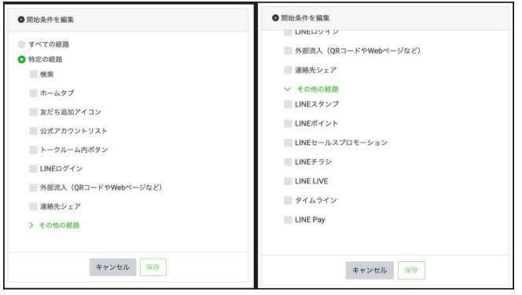
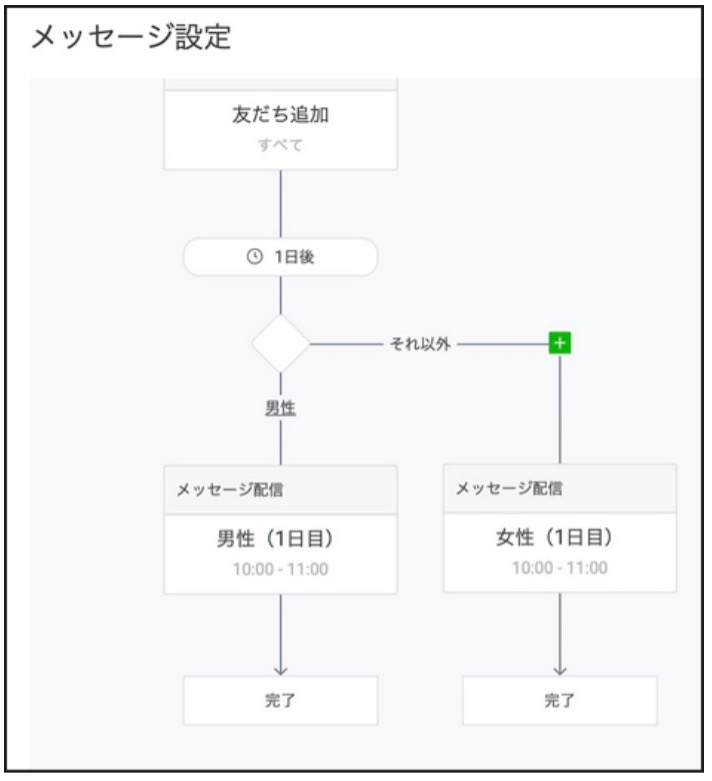

#030_Lステップなしでもステップ配信が出来るように

こんにちは！ matsumotoです。本日は、前回に引き続きLINE公式アカウントとLステップの【ステップ配信】について、それぞれ解説していきます。
（１）Lステップ無しでもステップ配信できるように
2月末にLINE公式アカウントにステップ配信機能が追加されました。そもそもステップ配信とは？ですが、基本は登録日を起点とし、任意で設定したタイミング通りにあらかじめ用意した内容を自動で配信する機能のことをいいます。以前は、有料の「Lステップ」を導入しないと使えなかった機能です。
今回、LINE公式アカウント自体にこのステップ配信機能が追加されました。最初に配信開始条件を“すべての友だち”か“特定の経路（友だちの属性に応じて）から”か、どちらか選ぶのですが、この条件設定自体がイマイチ、と正直コンサルタント的には感じます。YouTubeやfacebookなどは選択肢にありません。

そして、1回目の配信時に“条件分岐”します。ここから全ての配信についてその条件が適用されるのですが、その条件とは「性別・年代・都道府県・OS」の4項目だけです。しかもこれはLINEネットワーク内での“みなし属性（実際の属性を反映しているとは限らない、おそらくユーザー側の設定の問題）”なので、この時点ですでに数多くの機会損失が起きている、と言えるでしょう。

登録した初日は定型の“あいさつメッセージ”を流せるだけで、いわゆる「ステップ配信」をスタートできるのは早くともその翌日からになります。そして、２回目の配信も例えば「翌日朝10:00～11:00の間」など、1時間単位での設定しかできません。配信スケジュールの設定も、最大で『30日後』までしか設定できないのです。
（２）Lステップの配信はこんなに親切設計！
それに比べ、Lステップなら分岐条件を自由に設定できます。たとえば、登録時のあいさつメッセージをアンケート形式にし、回答してもらうことができれば正確なセグメント配信も可能になります。（※初回にいきなり「アンケート」を持ってきて、回答してもらうというのは多少リスクを伴います）

さらに、ステップ配信の発動（タイミング）条件を詳しく設定しておくだけで、自動的にセグメントに応じて分岐し配信してくれます。配信のタイミングも友だち登録直後から1分単位で設定することができます。
さらに、配信の状況に合わせてリッチメニュー自体も変更されるように設定できるので、自分のLINE公式アカウントで『何を訴求するのか』という重要なポイント自体をそれぞれの友だちにあわせて自動的にカスタマイズできます。これは超親切な設計ですよね！！
（３）コンサルタントのおすすめ
LINE公式アカウントの「ステップ配信」とLステップの「ステップ配信」の違い、ご理解いただけましたか？ この二つを比較して、どちらがいいかと聞かれれば、コンサルタント的には「Lステップ一択！」となります。
ただ、LINE公式アカウントのみでも無料でステップ配信を行うことができるようになったので、ご予算の問題や、業種的に友だちを大勢集める自信がない、という方は一旦LINE公式アカウントのみから始めるのもアリだと思います。
セグメント配信を利用する前提で、LINE公式アカウントのみで行うか、Lステップを導入するか迷っておられる場合は、下記の内容を目安に考えてみてください。
・自社のサービスが伝わってないと感じる・・・
・ブロック率が30%以上ある
・月の配信メッセージ数が800を越える
すでにこれらの条件を満たしているのであれば、すぐにでもLステップを導入してください。「そこのところをもう少し詳しく・・・」という場合は、ぜひ初回60分無料相談を利用してmatsumotoまでご相談くださいね！画面右下の「友だち追加特典」ボタンからmatsumotoを友だち追加して、ご都合の良い日時にご予約ください。
他にも、このブログで「こんな内容を解説してほしい」「ここの部分を詳しく教えてほしい」など、取り上げて欲しいテーマも募集中です！リクエストいただければ、そのテーマに沿って回答したいと思いますので、ぜひLINEからお知らせください！
まずはLINE公式アカウントを開設しましょう！
●LINE公式アカウントの開設方法はこちら
●LINE公式アカウントをオススメする理由はこち
●LINE公式アカウントでできることはこちら
●Lステップでできることはこちら